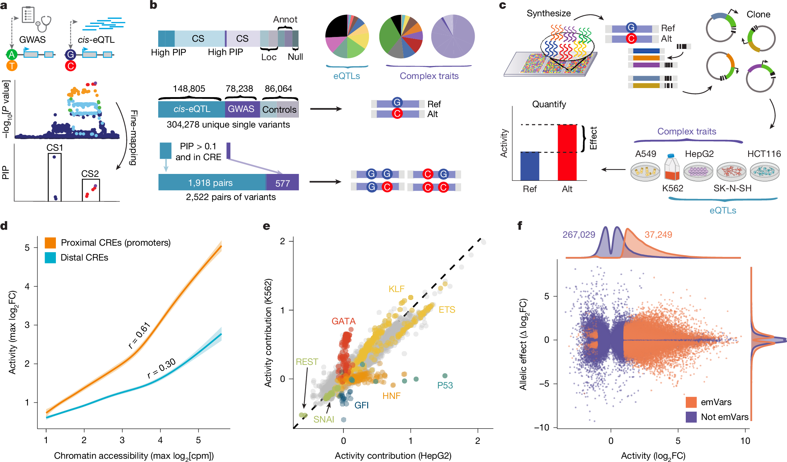
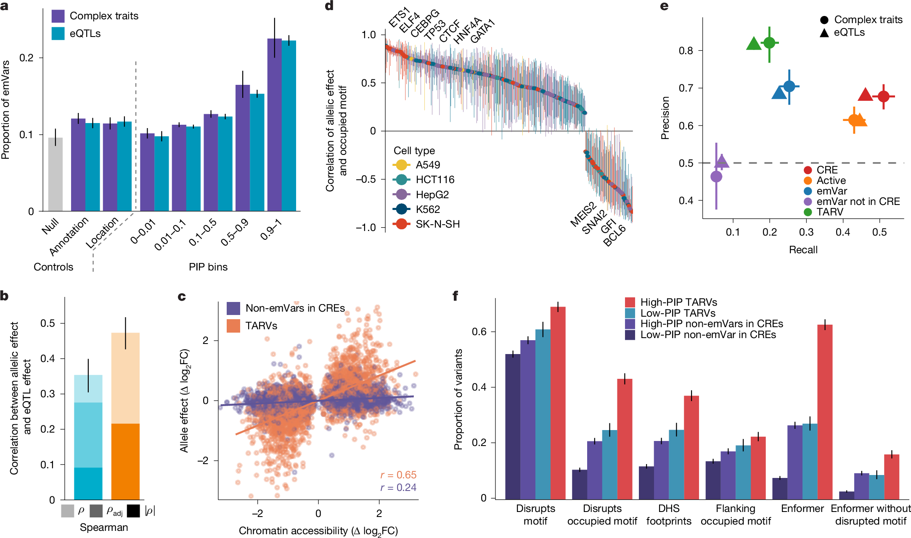
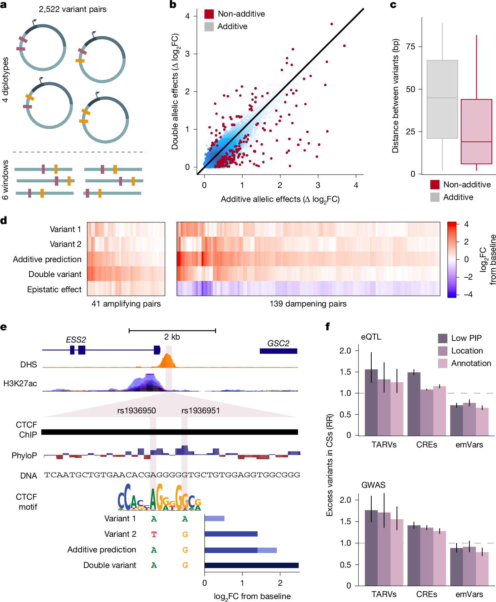
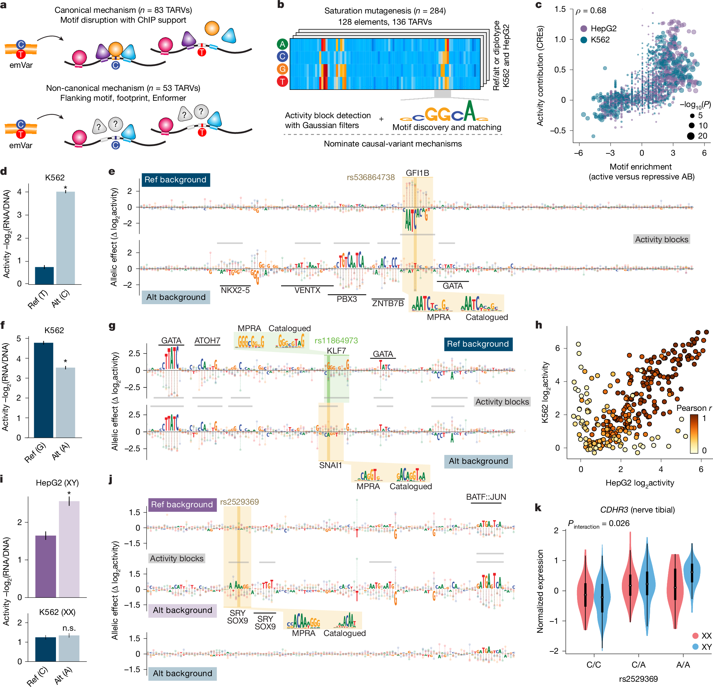
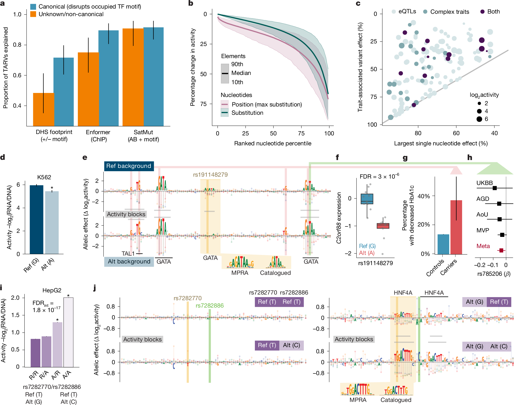

Background
研究背景
Genome-wide association studies (GWASs) have linked tens of thousands of loci to complex human traits and diseases, but identifying the exact causal variants remains a core challenge. Most trait-associated variants have weak individual effects and reside in non-coding cis-regulatory elements (CREs), complicating mechanistic interpretation.
全基因组关联研究（GWAS）已将数万个基因位点与复杂人类性状和疾病联系起来，但精确鉴定因果变异仍是核心挑战。大多数性状相关变异具有微弱的个体效应，且位于非编码顺式调控元件（CRE）中，使机制解读更加困难。
Genetic fine-mapping assigns posterior inclusion probabilities (PIPs) to each variant, but only 10–20% of trait-associated loci can be resolved to a single variant. Direct genome editing is limited in scale and sensitivity for studying hundreds of thousands of variants.
遗传学精细定位为每个变异分配后验包含概率（PIP），但仅10–20%的性状相关位点能被解析到单个变异。直接基因组编辑在研究数十万变异时规模和灵敏度有限。
This study addresses these challenges by deploying massively parallel reporter assays (MPRAs) across five cell types to systematically evaluate the regulatory effects of 221,412 fine-mapped variants, combined with saturation mutagenesis for mechanistic dissection.
本研究通过在五种细胞系中部署大规模平行报告基因检测（MPRA），系统评估221,412个精细定位变异的调控效应，并结合饱和突变分析进行机制解剖，以应对上述挑战。
Study Design
研究设计
| Parameter | Details | 参数 | 详情 |
|---|---|---|---|
| Species | Human (Homo sapiens) | 物种 | 人（Homo sapiens） |
| Cell Lines | K562 (blood/myeloid), HepG2 (liver), SK-N-SH (brain), HCT116 (colon), A549 (lung) | 细胞系 | K562（血液/髓系）、HepG2（肝脏）、SK-N-SH（脑）、HCT116（结肠）、A549（肺） |
| Cohorts | UK Biobank (366,194), Biobank Japan (178,726), GTEx v.8 (838 individuals, 49 tissues) | 队列 | 英国生物样本库（366,194人）、日本生物样本库（178,726人）、GTEx v.8（838人，49组织） |
| Traits | 48 complex traits & diseases + 17,969 gene eQTLs across 49 tissues | 性状 | 48种复杂性状与疾病 + 17,969个基因eQTL（49种组织） |
| Technology | MPRA (200 bp elements, median 163 barcodes), Saturation Mutagenesis (136 TARVs) | 技术 | MPRA（200 bp元件，中位163条barcode）、饱和突变分析（136个TARV） |
| Fine-mapping | SuSiE with GWAS summary statistics, 95% credible sets, in-sample LD | 精细定位 | SuSiE结合GWAS汇总统计量、95%可信集、样本内LD |
Methods
方法
Functional Element Identification
功能元件鉴定
MPRA tested 304,278 unique elements across five cell types (K562, HepG2, SK-N-SH, HCT116, A549). Of these, 30.4% (92,560) were active, with 96.6% enhancing transcription. Among active elements, 40.2% (37,249) harbored expression-modulating variants (emVars).
MPRA在五种细胞类型（K562、HepG2、SK-N-SH、HCT116、A549）中测试了304,278个独特元件。其中30.4%（92,560个）具有活性，96.6%增强转录。在活性元件中，40.2%（37,249个）含有表达调控变异（emVars）。
Element activity correlates with chromatin accessibility (Pearson r = 0.61 at promoters, 0.30 at distal CREs), and TF motif contributions are largely consistent across cell types (r = 0.88–0.94).
元件活性与染色质可及性相关（启动子处Pearson r = 0.61，远端CRE处r = 0.30），TF基序贡献在各细胞类型间高度一致（r = 0.88–0.94）。
Figure 1 — Functional genetic elements housing fine-mapped traits

Causal Variant Prioritization
因果变异优先排序
Requiring CRE overlap with allele-specific effects (TARV status) improved precision to 0.82–0.83 while maintaining recall of 0.15–0.20. In total, 13,121 trait-associated regulatory variants (TARVs) were identified across 18,976 non-coding credible sets.
要求CRE重叠与等位基因特异性效应（TARV状态）将精度提高至0.82–0.83，同时保持0.15–0.20的召回率。共鉴定出13,121个性状相关调控变异（TARV），覆盖18,976个非编码可信集。
69% of TARVs disrupt known TF motifs, and emVar allelic effects correlate with chromatin accessibility (r = 0.65) and TF occupancy (r = 0.54). Enformer identified 62.6% of high-PIP TARVs versus only 7.3% of background CRE variants.
69%的TARV破坏已知TF基序，emVar等位基因效应与染色质可及性（r = 0.65）和TF占据（r = 0.54）相关。Enformer识别了62.6%的高PIP TARV，而背景CRE变异仅为7.3%。
Figure 2 — Reporter assays recapitulate endogenous regulatory function

Regulatory Epistasis & Multiple Variants
调控上位性与多变异效应
Testing 2,522 variant pairs across all four diplotypes revealed regulatory epistasis at 11% of pairs (FDR < 0.1). Non-additive effects were driven by variant proximity (mean 18 bp, P = 2.0 × 10−10), with 77% being dampening interactions where combined effects were smaller than expected.
对2,522对变异的四种单倍型组合测试发现，11%的变异对存在调控上位性（FDR < 0.1）。非加性效应受变异间距离驱动（平均18 bp，P = 2.0 × 10−10），77%为抑制型相互作用，联合效应小于预期。
Excess TARVs in credible sets support regulatory allelic heterogeneity, with 0.1–3.0% of credible sets containing multiple functional variants. This provides evidence for linkage masking, where opposing-effect variants escape negative selection.
可信集中TARV的过量支持调控等位基因异质性，0.1–3.0%的可信集包含多个功能性变异。这为连锁掩蔽提供了证据，即具有相反效应的变异逃避负选择。
Figure 3 — Regulatory allelic heterogeneity and multiple causal variants

Saturation Mutagenesis Maps
饱和突变功能图谱
Deep mutational scanning of 128 elements containing 136 TARVs recovered 99% of unique substitutions (>170,000). Activity blocks (ABs)—short motif-like sequences (mean 9 bp)—were identified in 98% of elements using Gaussian filtering, with at least one TF assigned for 89% of ABs.
对128个包含136个TARV的元件进行深度突变扫描，恢复了99%的独特替换（>170,000个）。利用高斯滤波在98%的元件中识别出活性块（AB）—短基序样序列（平均9 bp），89%的AB至少匹配一个TF。
34% of ABs acted as repressors. Cell-type-specific effects were explained by master regulators: GFI1B repression in K562 but not HepG2; SRY/SOX9 activation only in XY HepG2 cells, revealing sex-dependent CDHR3 expression effects (P = 0.026).
34%的AB充当抑制子。细胞类型特异性效应由主调控因子解释：GFI1B在K562中抑制但在HepG2中无效；SRY/SOX9仅在XY HepG2细胞中激活，揭示了CDHR3表达的性别依赖性效应（P = 0.026）。
Figure 4 — Saturation mutagenesis of 136 fine-mapped TARVs

Mechanistic Resolution & Clinical Insights
机制解析与临床启示
Saturation mutagenesis explained 91% of all TARVs (124/136), including 91% of non-canonical TARVs (48/53), outperforming Enformer and DHS footprints. For 47 of 53 non-canonical TARVs, saturation mutagenesis nominated at least one causal TF, whereas traditional PWM matching identified only 5.
饱和突变分析解释了91%的TARV（124/136），包括91%的非经典TARV（48/53），优于Enformer和DHS足迹。对于53个非经典TARV中的47个，饱和突变分析提名了至少一个因果TF，而传统PWM匹配仅识别了5个。
At the HbA1c-associated GATA element (rs191148279), rare allele carriers at adjacent high-impact positions showed 3.8× higher odds of HbA1c decrease. A common African-ancestry variant (MAF = 0.18) in an adjacent GATA site also significantly reduced HbA1c (P = 6.4 × 10−10), demonstrating cross-ancestry functional convergence.
在HbA1c相关的GATA元件（rs191148279）处，相邻高影响位点的罕见等位基因携带者HbA1c下降的几率高3.8倍。相邻GATA位点的一个非洲血统常见变异（MAF = 0.18）也显著降低了HbA1c（P = 6.4 × 10−10），证明了跨血统的功能趋同。
Figure 5 — Saturation mutagenesis uncovers variant mechanisms
